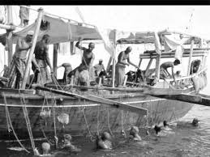
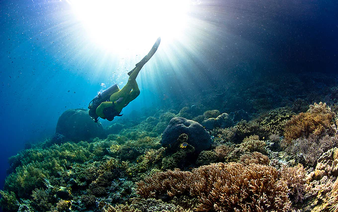

Discover the Rich Heritage of Middle East Pearl Diving
Explore the beautiful world of pearl diving, a centuries-old occupation that transformed the culture and economy of the Middle East.

Historical Significance
Learn about the vital role pearl diving has played in the history and development of Middle East.
EXPLORE HISTORY

Modern Day Industry
Explore how the pearl industry has evolved its place into the modern world.
SEE MODERN IMPACTQuick Facts
- Pearl diving dates back over 7,000 years
- Divers could descend upto a maximum depth of 40 meters!
- This industry peaked during the early 20th century
- Pearl diving transformed culture of coastal communities of Middle East